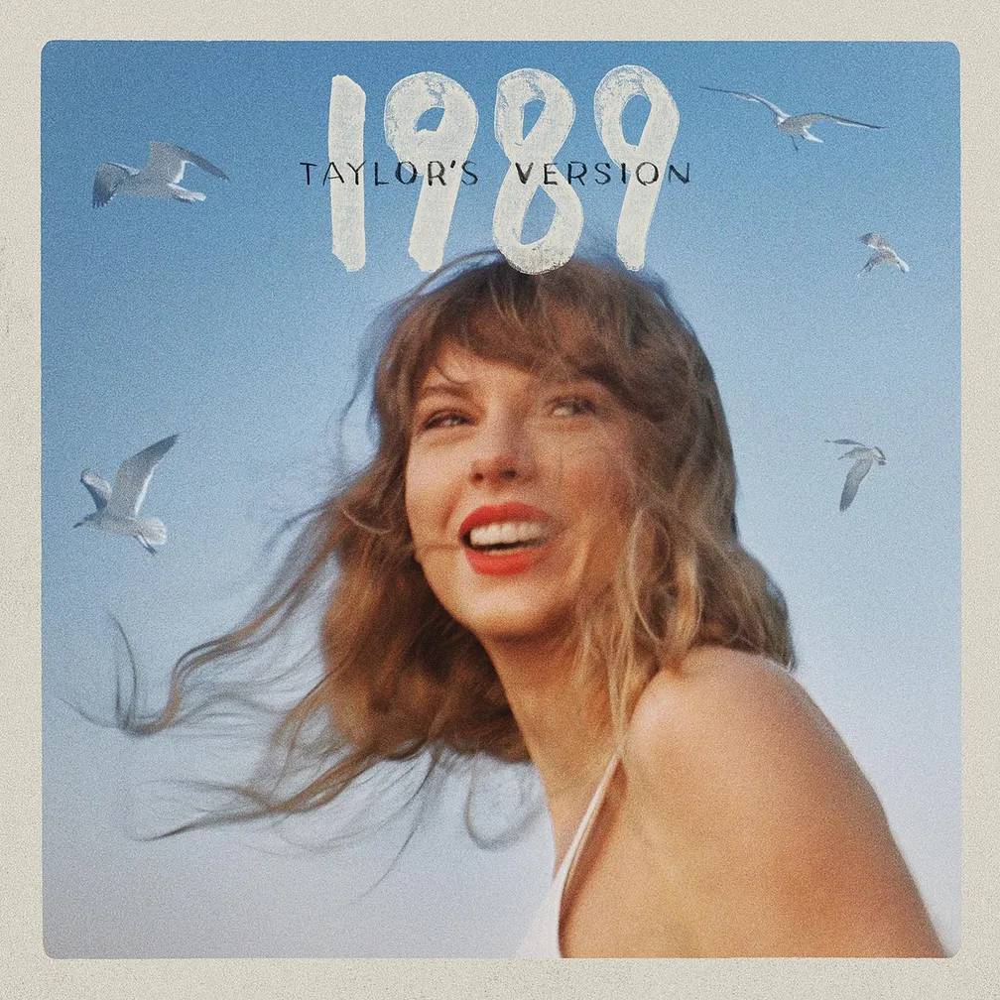

Discografia
Linha do tempo da música de Taylor Swift
Taylor Swift (debut)

Taylor Swift é o álbum de estreia homônimo da cantora e compositora estadunidense Taylor Swift, lançado através da Big Machine Records em 24 de outubro de 2006.
Fearless
.png)
Fearless é o segundo álbum de estúdio da artista musical estadunidense Taylor Swift. O seu lançamento ocorreu em 11 de novembro de 2008, através da Big Machine Records.
Speak Now

Speak Now é o terceiro álbum de estúdio de Taylor Swift, lançado no dia 25 de outubro de 2010 através da Big Machine Records e do Universal Music Group. Esse álbum foi divulgado dois anos depois do Fearless, um grande sucesso de vendas por parte da lorinha.
Red

Red é o quarto álbum de estúdio de Taylor Swift e foi lançado em 22 de outubro de 2012, através da Big Machine Records. Depois de escrever Speak Now (2010) inteiramente sozinha, a cantora iniciou as composições para o novo trabalho da carreira. Embora tenha inicialmente escrito mais de 20 canções com o colaborador de longa data Nathan Chapman, Taylor decidiu que deveria "sair da zona de conforto" e quis trabalhar com novos profissionais, tendo composto mais de 30 músicas e trabalhado com novos colaboradores na produção de Red, nomeadamente Max Martin, Shellback, Dann Huff, Jacknife Lee, Butch Walker e Dan Wilson. O produto foi concebido e gravado entre 2010 e 2012, e apresenta participações vocais de Ed Sheeran e Gary Lightbody, da banda Snow Patrol.
O título do álbum se refere às emoções tumultuosas e "vermelhas" resultadas do romance ineficaz vivido pela artista durante o desenvolvimento do mesmo. Musicalmente, assim como nos discos anteriores de Swift, Red incorpora o country como estilo musical predominante, contendo elementos de gêneros como o folk, o rock e a música eletrônica e subgêneros como arena rock, Britrock, dance-pop e dubstep.
1989
1989 é o quinto álbum de estúdio de Taylor Swift, lançado em 27 de outubro de 2014, através da gravadora Big Machine. Inicialmente, o álbum foi comercializado somente nos formatos físico e digital, não sendo disponibilizado em serviços de streaming, uma decisão vinda da própria Taylor. O álbum foi desenvolvido e gravado entre 2013 e 2014 durante a turnê The Red Tour; e Taylor Swift colaborou com uma série de compositores e produtores, incluindo Max Martin, Shellback, Jack Antonoff, Greg Kurstin e Ryan Tedder.
O título foi inspirado no ano de seu nascimento e pela cena musical da década. O encarte é composto por fotos de câmeras instantâneas Polaroid, sortidas em cada cópia do trabalho, com cada uma delas contendo trechos das canções escritos por ela mesma.
reputation

reputation é o sexto álbum de estúdio de Taylor Swift, lançado em 10 de novembro de 2017, através da gravadora Big Machine. Após seu quinto álbum de estúdio 1989 (2014), Taylor se envolveu em disputas altamente divulgadas com várias celebridades e tornou-se constantemente alvo de escrutínio em tabloides. Ela, portanto, isolou-se da imprensa e da mídia social, onde mantinha uma presença ativa, e passou a desenvolver Reputation como um esforço para renovar seu estado de espírito, visando abordar duas temáticas principais; um baseado nas fofocas excessivas que a cercam, visto no tema declarativo do álbum, e o outro sobre como encontrar o amor em meio aos eventos tumultuosos.
Lover

Lover é o sétimo álbum de estúdio de Taylor Swift. O seu lançamento ocorreu em 23 de agosto de 2019, através da Republic Records. Após o lançamento de seu álbum anterior reputation (2017), descrito como um "mecanismo de defesa" para lidar com a experiência tumultuosa de sua vida pública, Taylor finalizou seu contrato de doze anos com a Big Machine Records. Enquanto excursionava pelo mundo com a Reputation Stadium Tour (2018), a artista pôde experimentar o amor de seus fãs o que a ajudou a recuperar sua saúde mental após as controvérsias que levaram a Reputation. Com base nisso, ela começou a conceituar um álbum que apresentasse seu lado pessoal e vulnerável, conectando-a com seu público e mostrando seus pontos fortes como artista, além de canalizar sua vida pessoal reajustada e a libertação de sua percepção pública.
folklore

folklore é o oitavo álbum de estúdio de Taylor Swift, lançado em 24 de julho de 2020 através da gravadora Republic Records. A concepção de folklore se deu no contexto da pandemia de COVID-19, quando a loirinha foi obrigada a entrar em quarentena, findando por abortar os planos de embarcar em uma turnê mundial para promover seu disco anterior, Lover (2019), bem recebido comercial e criticamente. Nesse período, ela idealizou folklore como "uma coleção de canções e histórias que fluíam como um fluxo de consciência de sua imaginação", dedicando-se a trabalhar virtualmente com os produtores musicais Aaron Dessner e Jack Antonoff. Swift gravou os vocais do álbum em um estúdio embutido na residência dela em Los Angeles, enquanto Dessner e Antonoff trabalharam em Hudson Valley e Nova Iorque, respectivamente. Musicalmente, folklore marca uma nova direção para Taylor, distanciando-se das sonoridades pop comerciais marcantes nos últimos trabalhos dela, bem como do country que a acompanhou no início de sua carreira. O novo álbum derivou-se de gêneros pouco explorados como indie folk e chamber pop, bem como foi influenciado por elementos de rock alternativo. Nesse sentido, por ter sido concebido durante um período de isolamento social, o disco manifesta liricamente uma narrativa vívida que canaliza escapismo, nostalgia, solidão e introspecção, opondo-se aos trabalhos anteriores da loira nos quais temas autobiográficos abundavam o escopo lírico. Em folklore dá-se maior ênfase à retórica de terceira pessoa, culminando na entrega de histórias intensas e dramáticas ao longo das canções, que incluem personagens fictícios. O título da produção foi inspirado no legado duradouro da música folclórica, enquanto a estética visual reflete o cottagecore.
evermore

evermore é o nono álbum de estúdio de Taylor Swift. O seu lançamento ocorreu em 24 de julho de 2020, através da Republic Records. Após seu disco anterior, Folklore, que fora desenvolvido e liberado durante a quarentena em decorrência da pandemia de COVID-19, a loirinha continuou a trabalhar remotamente com os produtores musicais Aaron Dessner e Jack Antonoff, em estúdios nos Estados Unidos, sob a qual também atuou como produção executiva. O material resultante desse processo é um extensão natural de folklore, que acabou assumindo sua identidade individual como Evermore.
Midnights

Midnights é o décimo álbum de estúdio de Taylor Swift, lançado em 21 de outubro de 2022 através da Republic Records. Swift o concebeu como um álbum conceitual sobre ruminações noturnas inspiradas em suas noites sem dormir. A composição autobiográfica explora emoções amplas, como arrependimentos, autocrítica, fantasias, desgosto e paixão, usando letras confessionais, porém enigmáticas, que aludem à sua vida pessoal e imagem pública.
THE TORTURED POETS DEPARTMENT

THE TORTURED POETS DEPARTMENT é o décimo primeiro álbum de estúdio de Taylor Swift, lançado em 19 de abril de 2024, através da Republic Records. Taylor escreveu e produziu o álbum com Jack Antonoff e Aaron Dessner. Swift anunciou o álbum durante o Grammy Awards de 2024, em 4 de fevereiro, após vencer o prêmio de Melhor Álbum Vocal de Pop pelo seu décimo álbum de estúdio Midnights (2022).